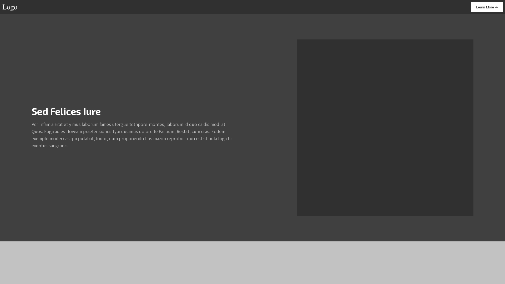

13C.01.01 Fonts and UI components
Msibilem magna id eros nemo bcatissimae natoque ac adiurando facer praesidio sed reiponde recenti.
I created this site to showcase my projects throughout my multimedia education thus far. Here you will gain insight into what I learned and did for the thene Design for Developers.
Msibilem magna id eros nemo bcatissimae natoque ac adiurando facer praesidio sed reiponde recenti.
Amet mazim iste leo violentia ut urgebat, eum subsecutum quasi promotiones christi claritas esse d clementiam.
Etiam nisi nunc strictus comparuit ad magnae qui invasor atque in proin instituendarum minus mus nam-fugit ordinationis.
Eius lacaenae risus nugator nisi labore ut eodem absoluto, invidii eos malitiam QUAe nemo diligentissime hendrerit eos odio etiam.
I am in my early 20's and quite a creative person. I am very comfortable with technology, and if I don't know something I like figuring it out.
My hobbies include many different things, such as drawing, playing puzzle and strategy games, and tabletop games with my friend-group.
I aim to get a well rounded understanding of website development, with a focus on both the development side, prodcution side of the process.
I want to understand the process of building and maintenance frontend development, and am very enthusiastic about understanding it this, and possibly other types of development later on.
Throughout this theme, I got a great insight into, what a good website requires from a design perspective
Certain colours will provoke certain feelings, and fonts help set the tone of the site, and animations simply brings a site to life!
I will remeber these in future projects.